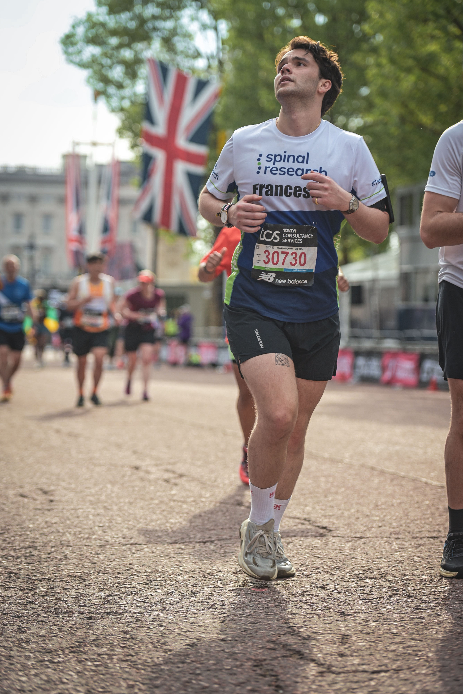
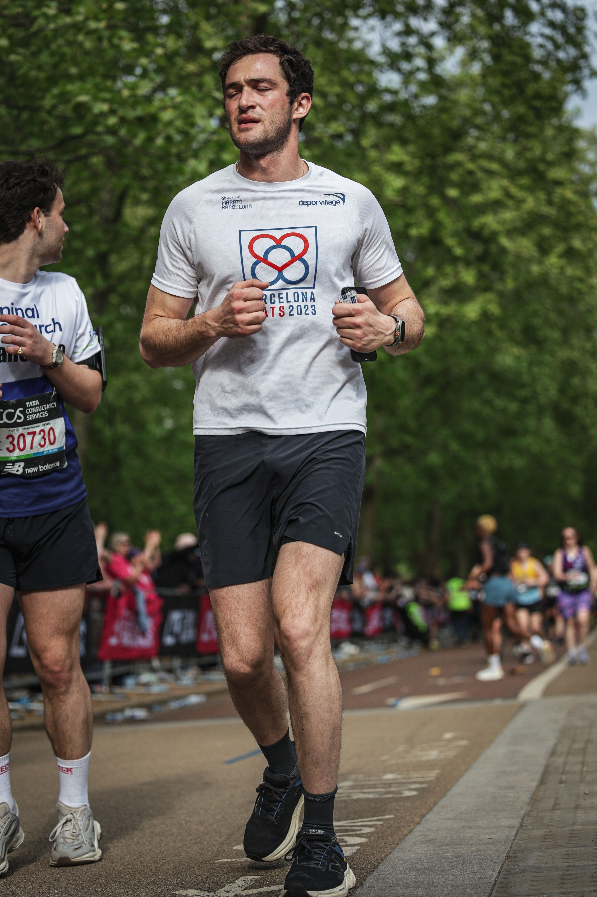
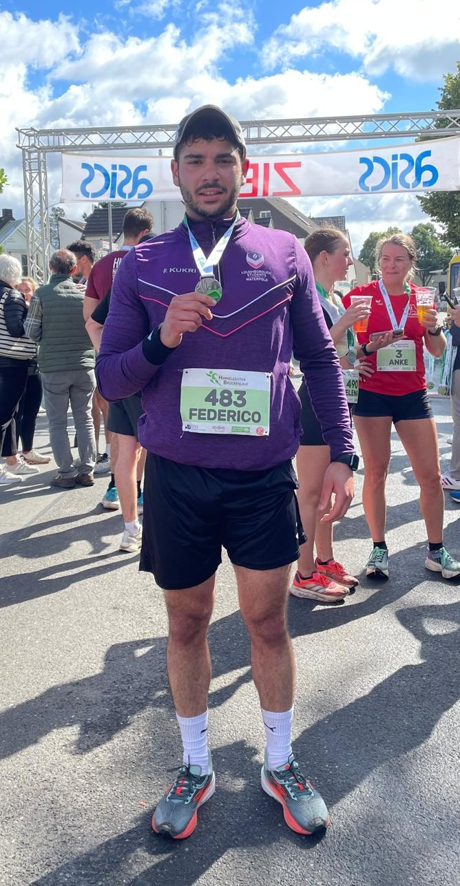
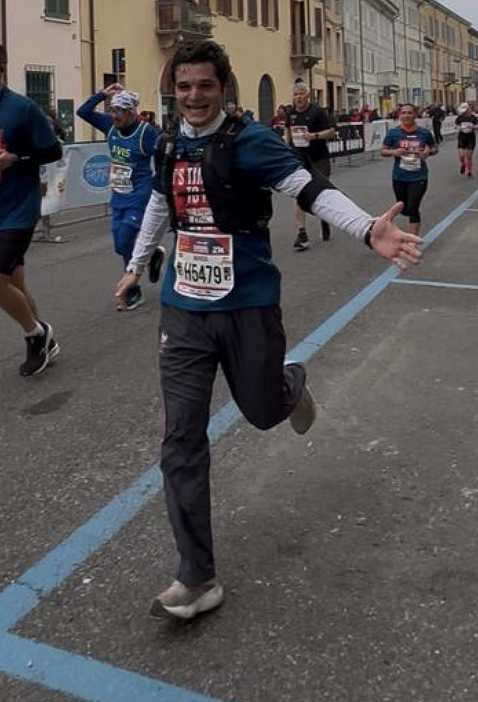
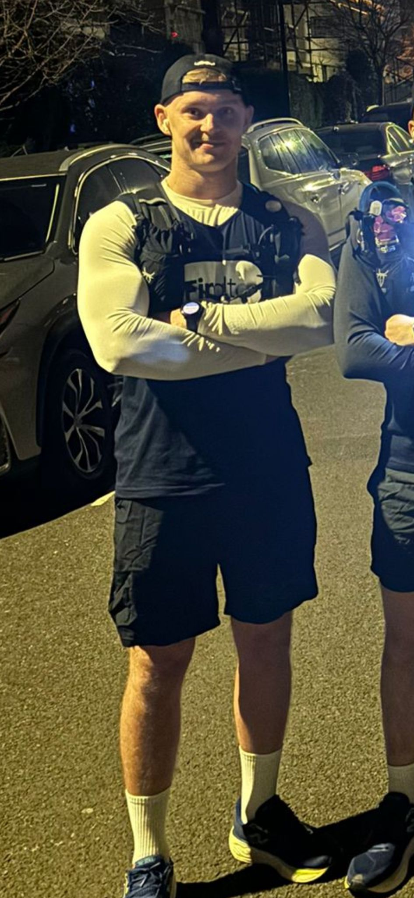

Join us for the annual Run4Ricky Marathon, where our team comes together to raise awareness and funds for spinal cord injury support.
Date: April 26, 2026
Location: London, England
Our Team

Running this marathon is deeply personal. Riccardo is not just my twin brother — he’s my lifelong teammate. When he sustained a spinal cord injury during a hike we took together in Oman, everything changed. But one thing didn’t: our belief in each other. This initiative was born from that belief — in his strength, in the power of medical research, and in the idea that hope, shared, becomes stronger.
I’m running to raise funds for Spinal Research and to inspire people with spinal injuries to have the same hope and resilience we have in Riccardo’s recovery, so that they too might find the strength to hope to run again one day. And I’m not running alone. I’ve asked our friends to join because recovery, like running, is not a solo journey. It’s about camaraderie, unity, and showing up — for each other and for something bigger than ourselves.
Together, we run. For Ricky. For everyone still fighting. For a future that moves forward.

I’m Francesco, running the London Marathon with and for my friend Riccardo, helping to push him in a wheelchair along with his twin brother and a small group of friends.
We went to school together, and now we’re running together, one team, one goal: to cross that finish line smiling (or at least still standing).
Riccardo was paralyzed in an accident nearly three years ago, but this journey is about moving forward together, with positivity, laughter, and potentially a lot of sweat. We're raising money for Spinal Research UK to help bring real change and hope.

I'm Federico, and alongside my teammates and friends, we're united behind one mission:
crossing that marathon finish line, led by our friend and brother Riccardo! We draw inspiration
from Ricky's positive smile and spirit, which shines bright even in the face of adversity. With his energy,
we'll power through the 42km, joking and laughing along the way. Ricky's not just the face of our team for
Spinal Research - he's an example of how to overcome any hurdle. Let's run for Ricky! 🏃♂️💪

I'm
I'm

Eric Running
Our Goals
Raise €5000 for spinal cord research and adaptive equipment.
Increase community awareness of spinal cord injuries.
Promote inclusive sporting events in the world.
Upcoming Events
January 18, 2026: Portofino Half-Marathon.
April 26, 2026: London Marathon in collaboration with spinal research.
New Updates
April 26, 2025: London Marathon sign up and commitment.
April 30, 2025: Create a team with close friends and twin brother.